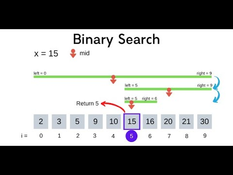

Tin tức mới nhất

Học C++ sao cho hiệu quả?
Theo thống kê mới nhất từ đại học Đại Nam số sinh viên trượt môn C++ lên tới con số đáng báo động. Sau đây là 5 bí kíp học tốt C++...xem thêm.

Tìm kiếm nhị phân là gì?
Tìm kiếm nhị phân là một trong những thuật toán thường được sử dụng trong môn DSA của sinh viên. Vậy làm sao để học hiệu quả...xem thêm.
Kém Toán thì có học được CNTT không?
Toán học là một môn học giúp các bạn học sinh rèn luyện khả năng tư duy logic và chúng cũng bổ trợ cho việc học lập trình. Kém Toán có học được lập trình không theo GS...xem thêm.